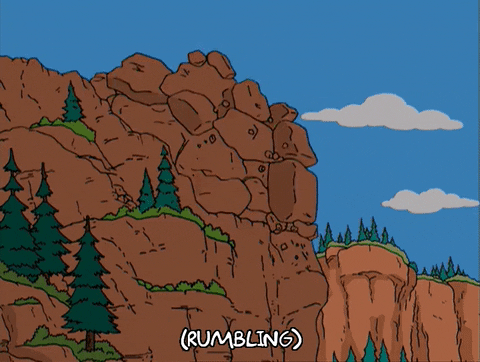

Earth is covered by a "veneer" of sedimentary rocks.
The veneer caps igneous and metamorphic rocks, known as the "basememnt".
Sedimentary rocks are the most common rock type on the surface of the Earth.
Sediment--
Loose fragments of rocks or minerals broken off bedrock.
Sediment is produced by weathering and erosion.
Sediment is transported by wind, water, or ice.
shells formed from organisms
Sedimentary Rocks--
Formed by the lithification of sediment.
Lithification-- the process of turning loose sediment into solid rock.
-Less than 1% of the Earths mass but covers 80% of the surface.
-Sedimentary rocks are the most common rock type on the surface of the Earth.
Weathering is the process in which rocks are broken down at the Earth's surface into smaller pieces.
Physical Weathering-- breaks rocks into smaller pieces without changing the chemical composition of the rock.
Chemical Weathering-- breaks rocks down by changing the chemical composition of the rock.
Physical Weathering Processes--
Doesnt change the mineral makeup. Creates "detritus" (broken fragments)
- Coarse fragments - Boulders, cobbles, and pebbles.
- Medium-grained fragments - Sand.
- Fine-grained fragments - Silt and clay.
Jointing - Cracks that form in rocks due to stress.
Exfoliation - The peeling of layers from a rock due to pressure release.
Chemical Weathering Processes-- Maximized under warm and wet conditions
Virtually absent in deserts.
Common Chemical weathering reactions: Dissolution, Oxidation, Hydrolysis, and Hydration
Dissolution - Minerals dissolve in water.
Hydrolysis - Minerals react with water to form new minerals.
Oxidation - Minerals react with oxygen to form new minerals.
Hydration - Minerals react with water to form new minerals.
Silicare weathering susceptibility predicted by stability
- High Temp and Pressure minerals tend to weather quickly at low Temp and Pressure
- Low Temp and Pressure minerals are more stable at Earth's surface
Organisms often are impoortant to weathering agents.
Organic acids attack minerals assisting in weathering.
Rates of weathering attack vary due to changes in the stability of a mineral.
The degree of compaction or cementation. The subtle diffrences in texture.
Soil consists of rock and sediment that has been modified by
physical and chemical interaction with organic material and rainwater,
overtime to produce a substract that can support the growth of plants.
Soil is a crucial natural resource that must be protected.
Soil Profile-- Soil forms a verticle sequence of layers
called a profile. Profiles develop from the surface downwards.
Zone of leaching - Uppermost layer.
Zone of accumulation - Lowermost layer.
Distict horizons reflect the soil formation process.
O horizons - Dark Organic matter rich surface layer
A horizons - Mineral matter mixed with some humus
E horizons - Light colored layer of leaching. Transitional layer.
B horizons - Zone of accumulation of clay transported from above. Organic-poor mineral rich layer.
C horizons - Partially altered parent material.
Soil Formation-- Soil forms from the interaction of climate, organisms, parent material, topography, and time.
Climate - Temperature and precipitation.
Substrate Composition - Soil parent minerals.
Slope steepness - Soils develop best on low slopes.
Drainage - Wet soils are more organic-rich.
Time - Older soils are more developed.
Vegatation - Controls type of organic matter that is added.
1. How does physical weathering differ from chemical weathering?
Answer: Physical weathering is the process of breaking down rocks and other geological materials into smaller pieces through mechanical processes, while chemical weathering is the process of breaking down rocks and other geological materials through chemical reactions.
2. Feldspars are among the most common minerals in igneous rocks, but they are
relatively rare in sediments. Why are they more susceptible to weathering and what
common sedimentary minerals are produced from weathered feldspar?
Answer: Feldspars are more susceptible to weathering than many other minerals because they contain relatively weak chemical bonds that are easily broken down by chemical weathering. When feldspars are weathered, common sedimentary minerals that are produced include clay minerals such as kaolinite, illite, and smectite.
3. What kind of minerals tends to weather more quickly?
Answer: A typical soil profile consists of several layers called horizons. The main horizons are the O Horizon (organic matter), A Horizon (topsoil), E Horizon (eluviation layer), B Horizon (subsoil), C Horizon (parent material), and R Horizon (bedrock).
4. Describe the different horizons in a typical soil profile.
Answer: A typical soil profile consists of several layers: O Horizon (organic matter), A Horizon (topsoil), E Horizon (eluviation layer), B Horizon (subsoil), C Horizon (parent material), and R Horizon (bedrock). Each horizon has unique physical, chemical, and biological characteristics that distinguish it from the others.
5. What factors determine the nature of soils in different regions?
Answer: The nature of soils in different regions is determined by several factors, including climate, parent material, topography, time, and organisms. These factors influence soil formation by affecting factors such as weathering, erosion, drainage, organic matter accumulation, and mineral composition.
6. Describe how a clastic sedimentary rock is formed from its unweathered parent rock.
Answer: A clastic sedimentary rock is formed from its unweathered parent rock through lithification, which involves weathering, erosion, transportation, deposition, compaction, and cementation. The grains of sediment become tightly packed together and are bound by mineral cements to form a solid rock.
7. Clastic and chemical sedimentary rocks are both made of material that has been
transported. How are they different?
Answer: Clastic and chemical sedimentary rocks are different in their composition and formation processes. Clastic rocks are made up of pieces of pre-existing rocks and minerals that are cemented together, while chemical rocks form from the precipitation and accumulation of minerals that have been dissolved in water. Clastic rocks have a clastic texture and form through mechanical weathering and transport, while chemical rocks often have a crystalline texture and form through chemical weathering and precipitation.
8. Explain how biochemical sedimentary rocks form.
Answer: Biochemical sedimentary rocks form from the accumulation and lithification of organic remains, such as shells and plant debris, which are composed of minerals that precipitate from water or deposited after they die. These accumulations are then buried and compacted, and minerals are cemented together to form a solid rock. Limestone, coal, and chert are examples of biochemical sedimentary rocks.
9. Describe how grain size and shape, sorting, sphericity, and angularity change as
sediments move downstream.
Answer: As sediments move downstream, they become smaller and more rounded due to abrasion and collision during transport. Sorting, sphericity, and roundness tend to increase while angularity decreases. Smaller grains can remain suspended in water while larger grains settle out closer to the source.
10. Describe how cross beds form. How can you read the current direction from cross
beds?
Answer: Cross beds form when sediment is deposited by wind or water in inclined layers within a larger sedimentary layer. The direction of the current or wind that formed the cross beds can be determined by the dip direction of the inclined layers. The dip direction reveals the direction of the current or wind that formed the cross beds, which allows geologists to determine the direction and strength of the flow at the time of deposition.
11. Describe how a turbidity current forms and moves. How does it produce graded
bedding?
Answer: A turbidity current is an underwater sediment flow triggered by gravity or sudden changes in water flow. As the current slows, it deposits sediment in a pattern known as graded bedding, with larger grains settling first and smaller grains settling last. The velocity of the current determines the size of the grains deposited, creating a sequence of layers with larger grains at the bottom and smaller grains at the top. This process is called turbidite deposition.
12. Compare the deposits of an alluvial fan with those of a typical river environment
and with those of a deep-marine deposit.
Answer: Alluvial fans have coarse, angular, and poorly sorted sediment due to their location at the base of a mountain range. Typical rivers have a wider range of sediment sizes and well-sorted, rounded, and layered sediments due to the more continuous flow of water. Deep-marine deposits have fine-grained, well-sorted, and layered sediments due to the low-energy environment of the ocean floor. These differences reflect the unique depositional environments of each.
13. What happens during diagenesis, and how does diagenesis differ from
metamorphism?
Answer: Diagenesis is the process of turning loose sediment into solid rock by compaction and cementation, as well as chemical changes. Metamorphism is the process of altering existing rocks due to heat and pressure, resulting in changes in mineralogy and texture.